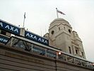
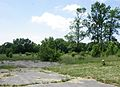

Main page
Contents
Featured content
Current events
Random article
Donate to Wikipedia
Wikipedia store
Interaction
Help
About Wikipedia
Community portal
Recent changes
Contact page
Tools
What links here
Related changes
Upload file
Special pages
Permanent link
Page information
Wikidata item
Print/export
Create a book
Download as PDF
Printable version
In other projects
Wikimedia Commons
Meta-Wiki
Wikispecies
Wikibooks
Wikidata
Wikinews
Wikiquote
Wikisource
Wikiversity
Wikivoyage
Languages
Simple English
العربية
Bahasa Indonesia
Bahasa Melayu
Bosanski
Български
Català
Čeština
Dansk
Deutsch
Eesti
Ελληνικά
Español
Esperanto
Euskara
فارسی
Français
Galego
한국어
עברית
Hrvatski
Italiano
ქართული
Latviešu
Lietuvių
Magyar
Nederlands
日本語
Norsk bokmål
Norsk nynorsk
Polski
Português
Română
Русский
Slovenčina
Slovenščina
Српски / srpski
Srpskohrvatski / српскохрватски
Suomi
Svenska
ไทย
Tiếng Việt
Türkçe
Українська
中文
Complete list
login
Welcome to Wikipedia,
the free encyclopedia that anyone can edit.
5,209,406 articles in English
From today's featured article

Maurice Richard (1921–2000) was a Canadian professional ice hockey player. He played 18 seasons in the National Hockey League (NHL) for the Montreal Canadiens between 1942 and 1960. A prolific scorer, he was the first player in NHL history to score 50 goals in one season and the first to reach 500 career goals. An eight-time Stanley Cup champion, he won the Hart Trophy as most valuable player in 1947 and played in 13 consecutive All-Star Games. Richard was a cultural icon for Quebec's Francophone population, as recounted in the short story The Hockey Sweater, which elevated him to a pan-Canadian hero. His 1955 suspension for striking an official precipitated the Richard Riot; some historians consider the incident a violent manifestation of Francophone Quebec's dissatisfaction over its place within Canada and a precursor to the Quiet Revolution. Richard was inducted into the Hockey Hall of Fame in 1961 and was named to the Order of Canada in 1967. The Canadiens retired his jersey number, 9, in 1960, and in 1998 donated the Maurice "Rocket" Richard Trophy to the NHL, awarded annually to the league's regular season leading goal-scorer. (Full article...)
Recently featured: Thorpe affair Interstate 68 Ricketts Glen State Park
Archive By email More featured articles...
Did you know...

- ... that the Peters's squirrel, the flat-headed myotis, the false canyon mouse, the Chamula mountain brook frog, the Sierra Juarez brook frog, the Tamaulipas pygmy owl, and the Oaxaca mud turtle (pictured) are all native to Mexico and found nowhere else?
- ... that a team called Europa has represented Gibraltar in the UEFA Europa League?
- ... that Višeslav was the first Serbian ruler known by name?
- ... that the packaging of the Alcatel Idol 4S smartphone is also a virtual reality headset?
- ... that Alberto Youssef has been called a "principal player" in the Petrobras scandal wherein Brazil's state oil firm accepted bribes in return for overpaying construction contracts?
- ... that 41 U.S. states follow the single-subject rule for legislation, and a proposed constitutional amendment would extend it to the federal government as well?
- ... that NASCAR driver Jeff Gordon is a global business advisor for his longtime sponsor Axalta Coating Systems?
In the news

- All 300 people on board Emirates Flight 521 escape after the aircraft (pictured) crash-lands and catches fire at Dubai International Airport.
- Flooding in Assam, India, kills 28 people, affects 1.6 million others and submerges Kaziranga National Park, a World Heritage Site.
- In golf, Jimmy Walker wins the PGA Championship.
- American skydiver Luke Aikins performs a 25,000-foot (7,600 m) free fall from an aircraft and lands on a ground net.
Ongoing: Purges in Turkey Kashmir unrest
Recent deaths: Chiyonofuji Mitsugu Doris Benegas Lucille Dumont Mahasweta Devi
On this day...

August 4: Beginning of The Nine Days (Judaism, 2016); Constitution Day in the Cook Islands (1965)
- 1783 – A cataclysmic eruption of Mount Asama (pictured), the most active volcano in Japan, killed roughly 1,400 people and exacerbated a famine, resulting in another 20,000 deaths.
- 1914 – First World War: Adhering to the terms in the 1839 Treaty of London, the United Kingdom declared war on Germany in response to the latter's invasion of Belgium.
- 1964 – A second US Navy destroyer was reportedly attacked by North Vietnamese forces in the Gulf of Tonkin, leading Congress to authorize the use of military force in Southeast Asia.
- 2006 – Sri Lankan Civil War: Seventeen employees of the French INGO ACF International were massacred in Muttur.
More anniversaries: August 3 August 4 August 5
Archive By email List of historical anniversaries
Current date: August 4, 2016 (UTC) Reload this page
Today's featured picture
The SAI KZ IV was a light twin-engined aircraft first built in Denmark in 1944 for use as an air ambulance. A single machine was built during the war, and was used by Folke Bernadotte while negotiating for the release of Danish prisoners in German concentration camps. It is now held by the Danmarks Flymuseum and has been restored to its original wartime configuration and markings. A second aircraft was built and flown in 1949, remaining actively operational until the mid 1960s.
Photograph: Slaunger
Recently featured: Hubble Ultra-Deep Field Wah-ro-née-sah Soldiers Playing Cards and Dice
Archive More featured pictures...
Other areas of Wikipedia
- Community portal – Bulletin board, projects, resources and activities covering a wide range of Wikipedia areas.
- Help desk – Ask questions about using Wikipedia.
- Local embassy – For Wikipedia-related communication in languages other than English.
- Reference desk – Serving as virtual librarians, Wikipedia volunteers tackle your questions on a wide range of subjects.
- Site news – Announcements, updates, articles and press releases on Wikipedia and the Wikimedia Foundation.
- Village pump – For discussions about Wikipedia itself, including areas for technical issues and policies.
Wikipedia's sister projects
Wikipedia is hosted by the Wikimedia Foundation, a non-profit organization that also hosts a range of other projects:

Commons
Free media repository
Wikibooks
Free textbooks and manualsWikiquote
Collection of quotations
Wikiversity
Free learning materials and activities
MediaWiki
Wiki software development
Wikidata
Free knowledge base
Wikisource
Free-content library
Wikivoyage
Free travel guide
Meta-Wiki
Wikimedia project coordination
Wikinews
Free-content news
Wikispecies
Directory of species
Wiktionary
Dictionary and thesaurusLanguages